Github es una plataforma de desarrollo colaborativo que permite alojar proyectos utilizando el sistema de control de versiones Git. Se utiliza principalmente para la creación de código fuente de programas (software).
Note
El 4 de junio de 2018 Microsoft compró GitHub por la cantidad de 7500 millones de dólares. Al inicio, el cambio de propietario generó preocupaciones y la salida de algunos proyectos de este sitio; sin embargo, no fueron representativos. GitHub continúa siendo la plataforma más importante de colaboración para proyectos de código abierto.
1.2 Repositorios
Un repositorio contiene todo el código, tus archivos y el historial de revisiones y cambios de cada uno de ellos. Es el elemento más básico de Github.
Los repositorios pueden contar con múltiples colaboradores y pueden ser públicos o privados.
1.3 Principales términos
Término
Definición
Branch
Una versión paralela del código contenido en el repositorio, pero que no afecta a la rama principal.
Clonar
Para descargar una copia completa de los datos de un repositorio de GitHub.com, incluidas todas las versiones de cada archivo y carpeta.
Fork
Un nuevo repositorio que comparte la configuración de visibilidad y código con el repositorio «ascendente» original.
Merge
Para aplicar los cambios de una rama y en otra.
Pull request
Una solicitud para combinar los cambios de una branch en otra.
Remote
Un repositorio almacenado en GitHub, no en el equipo.
Upstream
La branch de un repositorio original que se ha forkeado o clonado. La branch correspondiente de la branch clonada o forkeada se denomina «descendente».
Registrarse ingresando correo electrónico y siguiendo los pasos descritos (crear contraseña y nombre de usuario)
La personalización de la cuenta se puede saltar haciendo click en skip abajo de la selección de opciones
Descargar e instalar Github Desktop
1.5 Crear repositorio
En la página principal de github hacer click en el ícono de usuario de la esquina superior derecha y luego ir a Tus repositorios
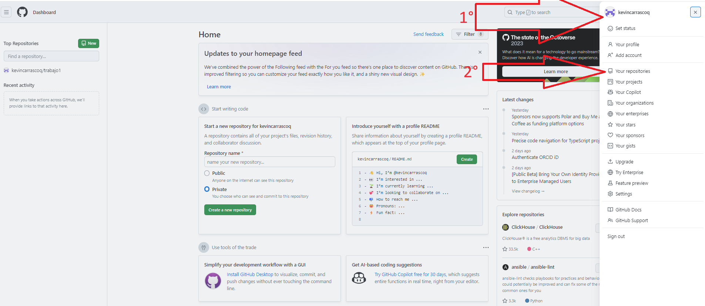
Una vez accedemos a Tus repositorios hacemos click en New/Nuevo
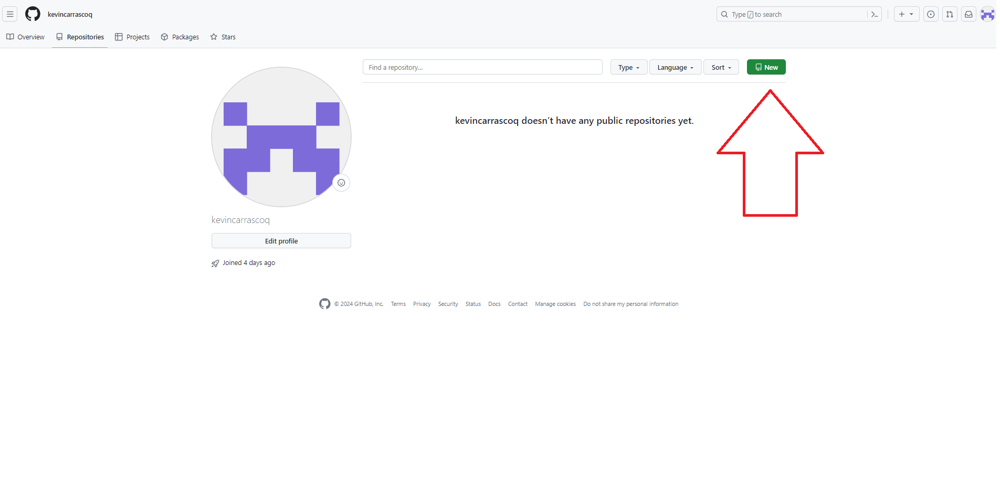
Luego le ponemos un nombre a nuestro repositorio, evitando siempre espacios, ñ y tíldes, y apretamos Crear repositorio
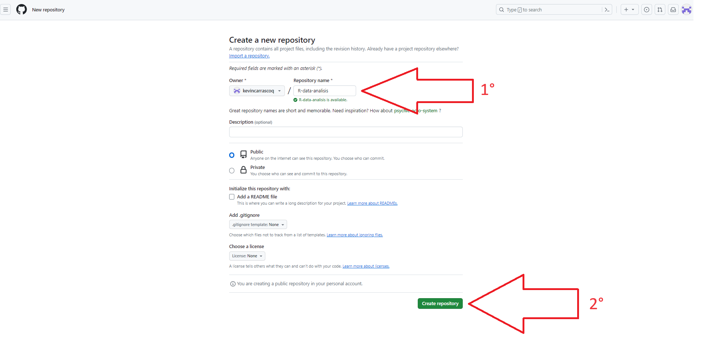
Note
Un buen nombre debería intentar resumir las principales características del proyecto de investigación en no más de 3 o 4 conceptos (por ejemplo, movilidad-social-AL para proyecto sobre movilidad social en América Latina)
En esta oportunidad, una recomendación sería generar un repositorio “ejercicios-practicos-RAD” para almacenar los distintos scripts de ejercicios prácticos que realizaremos en el curso R para el Análisis de Datos.
Luego pueden generar un segundo repositorio que sea “Trabajo RAD” para almacenar el desarrollo de sus trabajos de investigación.
1.6 Github desktop
Una vez creado un repositorio, lo que nos interesa es descargarlo. Al abrir la aplicación de Github desktop por primera vez (descargada anteriormente), nos debería aparecer la opción de clonar nuestro repositorio R-data-analisis en la pantalla de inicio. Lo clonamos y seleccionamos una carpeta de nuestro computador para almacenarlo.
Para todas las siguientes veces, las instrucciones son estas:
1- Apretamos Repositorio actual en la esquina superior izquierda
2- Apretamos añadir
3- Apretamos clonar repositorio…
4- Seleccionamos nuestro repositorio
5- seleccionamos la carpeta donde se almacenará. Siempre evitando tener tíldes, ñ y espacios en la dirección de almacenamiento y apretamos ‘clone’.
Note
La aplicación de escritorio de Github es un poco más intuitiva y fácil de usar. Sin embargo, RStudio también tiene una extensión para utilizar github de manera directa dentro de la plataforma.
7- Creamos las carpetas pertenecientes al protocolo IPO (input-procesamiento-output) para organizar nuestro proyecto)
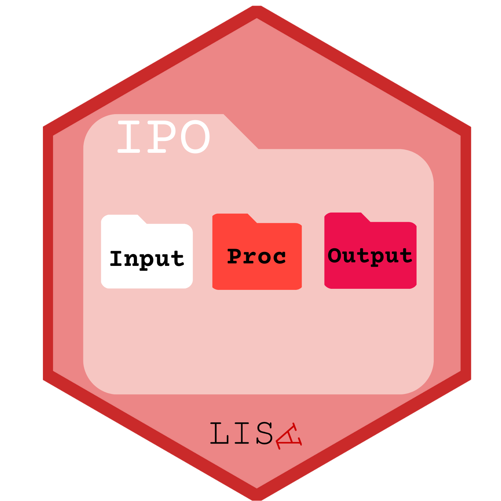
1.7 RStudio Projects
File -> New Project
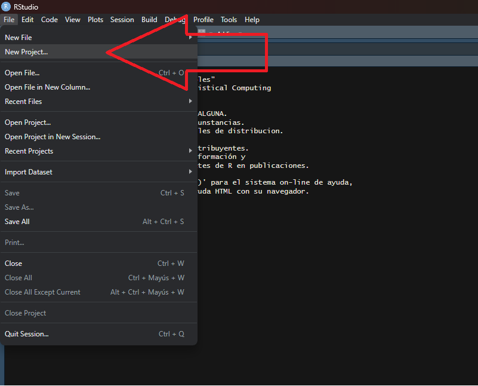
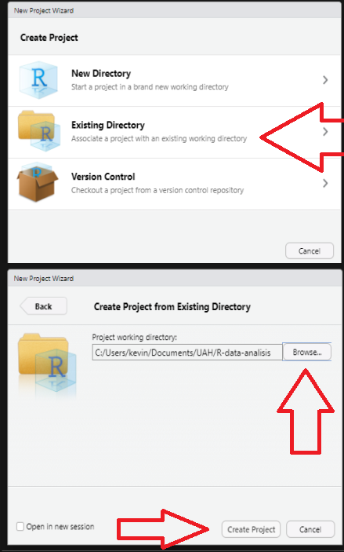
1.8 Abriendo la sesión de RStudio como proyecto
identificar en la carpeta respectiva el archivo .Rproj
ejecutar y se abre R / RStudio con ese directorio como raíz
1.9 Rutas relativas en código
forma de “señalar el camino” para abrir y guardar archivos al interior de una carpeta de proyecto autocontenido (= sin referencias locales)
este camino tiene básicamente 3 direcciones:
bajar -> hacia subcarpetas
subir -> hacia carpetas superiores
subir y bajar -> hacia otras subcarpetas
1.9.1 bajando
para “bajar” hacia a una subcarpeta, simplemente damos la ruta de la carpeta/archivo
ej: si estoy en el archivo paper.Rmd (directorio raíz), y quiero incluir una imagen (directorio input/images/imagen.jpg), entonces la ruta es input/images/imagen.jpg
o para señalar la ruta al bib desde paper.Rmd (en raíz): input/bib/referencias.bib
1.9.2 subiendo
para subir se utilizan los caracteres ../ por cada nivel.
Ej: si quiero guardar una tabla en el directorio raíz generada desde un archivo de código en la subcarpeta proc, entonces la ruta es ../tabla.html
1.9.3 subiendo y bajando
combinación de las anteriores
Ej: para abrir la base de datos original en la subcarpeta input/data desde el código de procesamiento en la subcarpeta proc, entonces:
../input/data/original.dat
2 Quarto
La escritura en Quarto tiene algunos códigos o funciones, aquí un resumen de su mayoría:
Código
Así se ve
Algo de texto en el párrafo.
Más texto
espacio entre lineas.
Algo de texto.
Algo de texto en el párrafo. Siempre utilizando espacios para dividir párrafos
Abrimos nuestro Rproject y creamos un nuevo documento de Quarto file –> new file –> Quarto document
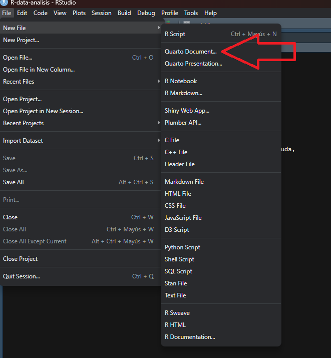
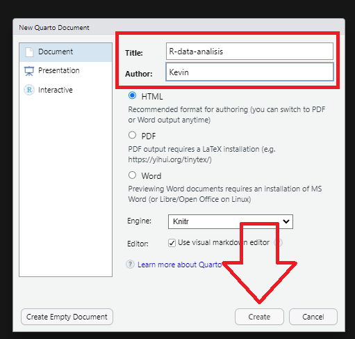
Note
YAML: Lenguaje de programación. Es un formato de serialización de datos que proporcionan un mecanismo de intercambio de datos legible por humanos. Dan formato a los datos de manera estandarizada para su intercambio entre aplicaciones de software.
Luego, podemos escribir en el documento, separando por títulos (#) cada sección. La jerarquía de los títulos se establece según la cantidad de ‘#’.
A continuación, en esta guía combinaremos el paso-a-paso de crear un documento dinámico con quarto, a la vez que vamos viendo distintas funciones de este proceso.
Por ejemplo, como hacer una nota al pie1. Para hacerlo, solo debemos escribir [ ^2] pero sin el espacio entre los corchetes. Luego, en otra línea escribimos [^2]: Esta es la nota al pie
4 Código de análisis de ejemplo
Para poder escribir código de análisis en un documento Quarto debemos generar trozo de código llamado ‘Chunk’, que se puede crear con ctrl+alt+i o directamente en el menú de arriba en ‘Code -> Insert Chunk’.
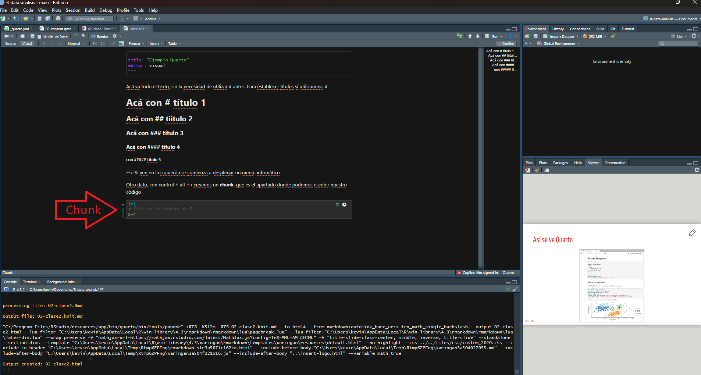
4.1 Cargar paquetes
Code
pacman::p_load(sjlabelled, dplyr, #Manipulacion de datos stargazer, #Tablas sjmisc, # Tablas summarytools, # Tablas kableExtra, #Tablas sjPlot, #Tablas y gráficos corrplot, # Correlaciones sessioninfo, # Información de la sesión de trabajo ggplot2) # Para la mayoría de los gráficos
4.2 Cargar bases de datos
Cargamos base de datos desde internet
Code
load(url("https://github.com/Kevin-carrasco/R-data-analisis/raw/main/files/data/latinobarometro_total.RData")) #Cargar base de datosproc_data$idenpa <-as_factor(proc_data$idenpa)
4.3 Visualizaciones
Podemos establecer referencias cruzadas para las tablas y gráficos dentro del texto, para poder automatizarlo, como ejemplo así, pero dentro del chunk:
#| label: tbl-sjmisc
#| tbl-cap: “Descriptivos con sjmisc”
4.3.1 Descriptivos
El Chunk se debería ver así:
---
#| label: tbl-sjmisc
#| tbl-cap: "Descriptivos con sjmisc"
sjmisc::descr(proc_data,
show = c("label","range", "mean", "sd", "NA.prc", "n"))%>% # Selecciona estadísticos
kable(.,"markdown") # Esto es para que se vea bien en quarto
---
Code
sjmisc::descr(proc_data,show =c("label","range", "mean", "sd", "NA.prc", "n"))%>%# Selecciona estadísticoskable(.,"markdown") # Esto es para que se vea bien en quarto
Table 1: Descriptivos con sjmisc
var
label
n
NA.prc
mean
sd
range
2
conf_gob
Confianza: Gobierno
19748
2.2569788
0.9668321
1.0013733
3 (0-3)
1
conf_cong
Confianza: Congreso
19382
4.0685013
0.8193169
0.8761394
3 (0-3)
4
conf_jud
Confianza: Poder judicial
19467
3.6477925
0.9404633
0.9232323
3 (0-3)
5
conf_partpol
Confianza: Partidos politicos
19653
2.7271827
0.6032158
0.7975983
3 (0-3)
7
educacion
Educación
20201
0.0148485
1.8826296
0.7588656
2 (1-3)
9
sexo
Sexo
20204
0.0000000
1.5215304
0.4995486
1 (1-2)
6
edad
Edad
20204
0.0000000
40.9985151
16.5383434
84 (16-100)
8
idenpa
idenpa
20204
0.0000000
365.3783409
260.4932509
830 (32-862)
3
conf_inst
Confianza en instituciones
18768
7.1075035
3.3030158
2.8506243
12 (0-12)
Luego de establecer el link y el nombre de la tabla, podemos referenciar acá con un @, así: @ tbl-sjmisc (pero junto), y que se vería así Table 1
4.3.2 Gráficos
Y para los gráficos se hace de la misma forma:
#| label: fig-graph
#| fig-cap: “Plots”
Code
graph1<-ggplot(proc_data, aes(x = idenpa, y = conf_inst)) +geom_boxplot() +labs(x ="País", y ="Confianza en instituciones") +theme_minimal()+theme(axis.text.x =element_text(angle =45, hjust =1))graph1
Warning: Removed 1436 rows containing non-finite outside the scale range
(`stat_boxplot()`).
Figure 1: confianza en instituciones según país
4.3.3 Guardamos este nuevo gráfico en la carpeta output
Code
ggsave(graph1, file="output/graphs/graph1.png")
Luego renderizamos
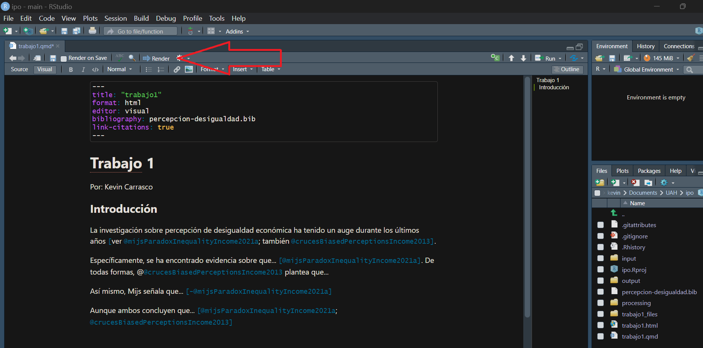
y se debería ver así (igual que esta página):
Ahora que tenemos nuestra investigación podemos subirla a Github Pages a través de Github Desktop.
4.4 Github desktop
4.5 Github pages
Ahora podemos ver los documentos modificados en nuestro repositorio online de github.
Vamos a settings
Dentro de Settings vamos a Pages, luego ‘none’ y seleccionamos ‘main’. Luego apretamos Save
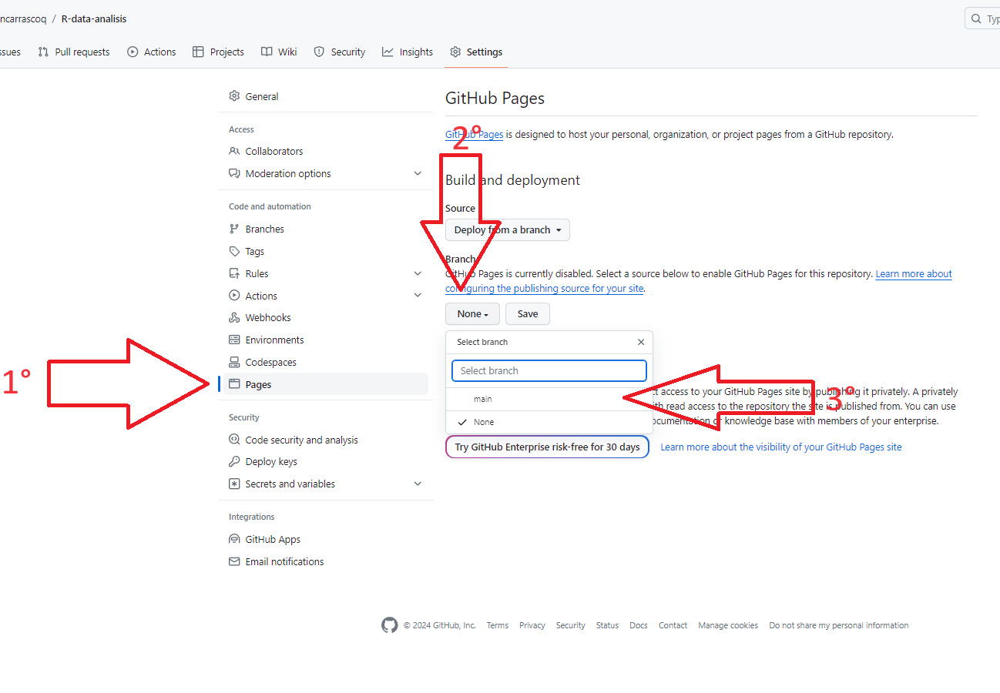
Luego de aproximadamente un minuto se actualiza la página y aparecerá un link en la parte superior, algo así como kevin-carrasco.github.io/ipo que es nuestra página principal de nuestro sitio web de github.
El link para llegar a nuestro documento renderizado de quarto sigue la estructura del repositorio:
kevin-carrasco.github.io/ipo/trabajo.html
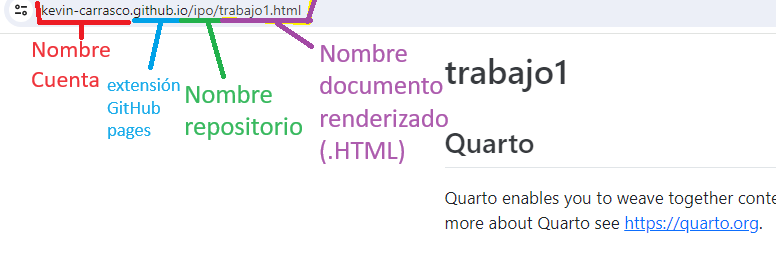
5 Tarea
El objetivo de esta tarea es que exploren la elaboración de documentos dinámicos.
La tarea debe ser subida a github y debe ser posible de visualizar con github pages, siguiendo las instrucciones de este mismo taller.
Entonces:
1- Seleccionar algún trabajo o taller de R ya realizado con anterioridad.
2- Crear un documento .qmd que reproduzca el trabajo seleccionado
3- Debe haber al menos una tabla descriptiva y al menos un gráfico
4- renderizar el documento (que se cree el archivo .html), almacenarlo en un repositorio de github y visualizarlo a través de github pages.
---title: "Introducción al flujo de investigación reproducible"format: html: toc: true number-sections: true output-file: "taller-github-quarto.html"editor: source---::: callout-note## Prerequisitos- Crear cuenta en [www.github.com](www.github.com)### Si usa computador personal- Descargar Github Desktop### Si es computador del laboratorioLa primera vez que utilicemos Git, tenemos que especificar las credenciales. Si no lo hacemos, probablemente las pida más adelante.Para esto, hay que usar la Terminal. Para acceder a ella en RStudio:Tools → Terminal → New Terminal (Alt+Shift+R)Aquí escribir las credenciales de su cuenta de Github. --- # <1> git config --global user.email "usuario2026@gmail.com" git config --global user.name "nombreusuario" --- # <1>:::# Github## DescripciónGithub es una plataforma de desarrollo colaborativo que permite alojar proyectos utilizando el sistema de control de versiones Git. Se utiliza principalmente para la creación de código fuente de programas (software). ::: callout-noteEl 4 de junio de 2018 Microsoft compró GitHub por la cantidad de 7500 millones de dólares. Al inicio, el cambio de propietario generó preocupaciones y la salida de algunos proyectos de este sitio; sin embargo, no fueron representativos. GitHub continúa siendo la plataforma más importante de colaboración para proyectos de código abierto.:::## RepositoriosUn repositorio contiene todo el código, tus archivos y el historial de revisiones y cambios de cada uno de ellos. Es el elemento más básico de Github.Los repositorios pueden contar con múltiples colaboradores y pueden ser públicos o privados.## Principales términos| Término | Definición ||---------------|------------------------------------------------------------------------------------------------------|| Branch | Una versión paralela del código contenido en el repositorio, pero que no afecta a la rama principal.|| Clonar | Para descargar una copia completa de los datos de un repositorio de GitHub.com, incluidas todas las versiones de cada archivo y carpeta. || Fork | Un nuevo repositorio que comparte la configuración de visibilidad y código con el repositorio «ascendente» original.|| Merge | Para aplicar los cambios de una rama y en otra. || Pull request | Una solicitud para combinar los cambios de una branch en otra. || Remote | Un repositorio almacenado en GitHub, no en el equipo. || Upstream | La branch de un repositorio original que se ha *forkeado* o clonado. La branch correspondiente de la branch clonada o *forkeada* se denomina «descendente». |## Crear cuenta e instalación1. Acceder a la página de [github](https://github.com/)Registrarse ingresando correo electrónico y siguiendo los pasos descritos (crear contraseña y nombre de usuario)La personalización de la cuenta se puede saltar haciendo click en **skip** abajo de la selección de opciones2. Descargar e instalar Github Desktop## Crear repositorioEn la página principal de [github](https://github.com/) hacer click en el ícono de usuario de la esquina superior derecha y luego ir a Tus repositoriosUna vez accedemos a Tus repositorios hacemos click en New/NuevoLuego le ponemos un nombre a nuestro repositorio, evitando siempre espacios, ñ y tíldes, y apretamos Crear repositorio::: callout-noteUn buen nombre debería intentar resumir las principales características del proyecto de investigación en no más de 3 o 4 conceptos (por ejemplo, movilidad-social-AL para proyecto sobre movilidad social en América Latina)En esta oportunidad, una recomendación sería generar un repositorio "ejercicios-practicos-RAD" para almacenar los distintos scripts de ejercicios prácticos que realizaremos en el curso R para el Análisis de Datos. Luego pueden generar un segundo repositorio que sea "Trabajo RAD" para almacenar el desarrollo de sus trabajos de investigación.:::## Github desktopUna vez creado un repositorio, lo que nos interesa es descargarlo. Al abrir la aplicación de Github desktop por primera vez (descargada anteriormente), nos debería aparecer la opción de clonar nuestro repositorio R-data-analisis en la pantalla de inicio. Lo clonamos y seleccionamos una carpeta de nuestro computador para almacenarlo.Para todas las siguientes veces, las instrucciones son estas:1- Apretamos Repositorio actual en la esquina superior izquierda2- Apretamos añadir3- Apretamos clonar repositorio...4- Seleccionamos nuestro repositorio5- seleccionamos la carpeta donde se almacenará. Siempre evitando tener tíldes, ñ y espacios en la dirección de almacenamiento y apretamos 'clone'.::: callout-noteLa aplicación de escritorio de Github es un poco más intuitiva y fácil de usar. Sin embargo, RStudio también tiene una extensión para utilizar github de manera directa dentro de la plataforma. :::7- Creamos las carpetas pertenecientes al protocolo IPO (input-procesamiento-output) para organizar nuestro proyecto)## RStudio Projects- File -> New Project## Abriendo la sesión de RStudio como proyecto- identificar en la carpeta respectiva el archivo .Rproj- ejecutar y se abre R / RStudio con ese directorio como raíz## Rutas relativas en código- forma de "señalar el camino" para abrir y guardar archivos al interior de una carpeta de proyecto autocontenido (= sin referencias locales)- este camino tiene básicamente 3 direcciones: - bajar -> hacia subcarpetas - subir -> hacia carpetas superiores - subir y bajar -> hacia otras subcarpetas ### bajando- para **"bajar"** hacia a una subcarpeta, simplemente damos la ruta de la carpeta/archivo - ej: si estoy en el archivo paper.Rmd (directorio raíz), y quiero incluir una imagen (directorio input/images/imagen.jpg), entonces la ruta es `input/images/imagen.jpg` - o para señalar la ruta al bib desde paper.Rmd (en raíz): `input/bib/referencias.bib`### subiendo- para **subir** se utilizan los caracteres `../` por cada nivel.- Ej: si quiero guardar una tabla en el directorio raíz generada desde un archivo de código en la subcarpeta proc, entonces la ruta es `../tabla.html`### subiendo y bajando - combinación de las anteriores- Ej: para abrir la base de datos original en la subcarpeta input/data desde el código de procesamiento en la subcarpeta proc, entonces:`../input/data/original.dat`# QuartoLa escritura en Quarto tiene algunos códigos o funciones, aquí un resumen de su mayoría:+-------------------------------------------------------------------------------+-------------------------------------------------------------------------------+|Código | Así se ve |+===============================================================================+===============================================================================+| Algo de texto en el párrafo. | Algo de texto. ||||| Más texto | Algo de texto en el párrafo. Siempre utilizando espacios para dividir párrafos|| espacio entre lineas. ||+-------------------------------------------------------------------------------+-------------------------------------------------------------------------------+| `` *Cursivas* `` | *Cursivas* |+-------------------------------------------------------------------------------+-------------------------------------------------------------------------------+| `` **Negrita** `` | **Negrita** |+-------------------------------------------------------------------------------+-------------------------------------------------------------------------------+|`# Título 1`| # Título 1 |+-------------------------------------------------------------------------------+-------------------------------------------------------------------------------+|`## Título 2`| ## Título 2 |+-------------------------------------------------------------------------------+-------------------------------------------------------------------------------+|`### Título 3`| ### Título 3 |+-------------------------------------------------------------------------------+-------------------------------------------------------------------------------+| (puedes llegar hasta un título N° 6 con `######`) ||+-------------------------------------------------------------------------------+-------------------------------------------------------------------------------+| `` [Texto enlace](https://quarto.org/) `` |[Texto enlace](https://quarto.org/)|+-------------------------------------------------------------------------------+-------------------------------------------------------------------------------+| ``  `` |{alt="Class logo"} |+-------------------------------------------------------------------------------+-------------------------------------------------------------------------------+|`> Citas`| > Citas |+-------------------------------------------------------------------------------+-------------------------------------------------------------------------------+| 1. Una | 1. Una || 2. lista ||| 3 ordenada | 2. lista |||||| 3. ordenada |+-------------------------------------------------------------------------------+-------------------------------------------------------------------------------+| - Otro | - Otro || - tipo ||| - de lista | - tipo |||||| - de lista |+-------------------------------------------------------------------------------+-------------------------------------------------------------------------------+1. Abrimos nuestro Rproject y creamos un nuevo documento de Quarto file --> new file --> Quarto document::: callout-noteYAML: Lenguaje de programación. Es un formato de serialización de datos que proporcionan un mecanismo de intercambio de datos legible por humanos. Dan formato a los datos de manera estandarizada para su intercambio entre aplicaciones de software.::: --- # <1> title: "Mi Documento" format: html: toc: true number-sections: true --- # <1>Luego, podemos escribir en el documento, separando por títulos (#) cada sección. La jerarquía de los títulos se establece según la cantidad de '#'. A continuación, en esta guía combinaremos el paso-a-paso de crear un documento dinámico con quarto, a la vez que vamos viendo distintas funciones de este proceso.Por ejemplo, como hacer una nota al pie[^1]. Para hacerlo, solo debemos escribir [ ^2] pero sin el espacio entre los corchetes. Luego, en otra línea escribimos [^2]: Esta es la nota al pie[^1]: Esta es la nota al pie# Código de análisis de ejemploPara poder escribir código de análisis en un documento Quarto debemos generar trozo de código llamado 'Chunk', que se puede crear con ctrl+alt+i o directamente en el menú de arriba en 'Code -> Insert Chunk'.## Cargar paquetes```{r}pacman::p_load(sjlabelled, dplyr, #Manipulacion de datos stargazer, #Tablas sjmisc, # Tablas summarytools, # Tablas kableExtra, #Tablas sjPlot, #Tablas y gráficos corrplot, # Correlaciones sessioninfo, # Información de la sesión de trabajo ggplot2) # Para la mayoría de los gráficos```## Cargar bases de datosCargamos base de datos desde internet```{r}load(url("https://github.com/Kevin-carrasco/R-data-analisis/raw/main/files/data/latinobarometro_total.RData")) #Cargar base de datosproc_data$idenpa <-as_factor(proc_data$idenpa)```## VisualizacionesPodemos establecer referencias cruzadas para las tablas y gráficos dentro del texto, para poder automatizarlo, como ejemplo así, pero dentro del chunk:#| label: tbl-sjmisc#| tbl-cap: "Descriptivos con sjmisc"### DescriptivosEl Chunk se debería ver así: --- # <1> #| label: tbl-sjmisc #| tbl-cap: "Descriptivos con sjmisc" sjmisc::descr(proc_data, show = c("label","range", "mean", "sd", "NA.prc", "n"))%>% # Selecciona estadísticos kable(.,"markdown") # Esto es para que se vea bien en quarto --- # <1>```{r}#| label: tbl-sjmisc#| tbl-cap: "Descriptivos con sjmisc"sjmisc::descr(proc_data,show =c("label","range", "mean", "sd", "NA.prc", "n"))%>%# Selecciona estadísticoskable(.,"markdown") # Esto es para que se vea bien en quarto```Luego de establecer el link y el nombre de la tabla, podemos referenciar acá con un @, así: @ tbl-sjmisc (pero junto), y que se vería así @tbl-sjmisc### GráficosY para los gráficos se hace de la misma forma:#| label: fig-graph#| fig-cap: "Plots" ```{r}#| label: fig-gdp#| fig-cap: "confianza en instituciones según país" graph1<-ggplot(proc_data, aes(x = idenpa, y = conf_inst)) +geom_boxplot() +labs(x ="País", y ="Confianza en instituciones") +theme_minimal()+theme(axis.text.x =element_text(angle =45, hjust =1))graph1```### Guardamos este nuevo gráfico en la carpeta output```{r eval=FALSE}ggsave(graph1, file="output/graphs/graph1.png")```5. Luego renderizamos y se debería ver así (igual que esta página):```{=html}<iframe src="https://version2025--r-data-analisis.netlify.app/practicos/practico5" width="1000" height="800"></iframe>```6. Ahora que tenemos nuestra investigación podemos subirla a Github Pages a través de Github Desktop.## Github desktop## Github pagesAhora podemos ver los documentos modificados en nuestro repositorio online de github.7. Vamos a settings8. Dentro de Settings vamos a Pages, luego 'none' y seleccionamos 'main'. Luego apretamos SaveLuego de aproximadamente un minuto se actualiza la página y aparecerá un link en la parte superior, algo así como [kevin-carrasco.github.io/ipo](kevin-carrasco.github.io/ipo) que es nuestra página principal de nuestro sitio web de github.El link para llegar a nuestro documento renderizado de quarto sigue la estructura del repositorio:kevin-carrasco.github.io/ipo/trabajo.html# TareaEl objetivo de esta tarea es que exploren la elaboración de documentos dinámicos. La tarea debe ser subida a github y debe ser posible de visualizar con github pages, siguiendo las instrucciones de este mismo taller.Entonces:1- Seleccionar algún trabajo o taller de R ya realizado con anterioridad.2- Crear un documento .qmd que reproduzca el trabajo seleccionado3- Debe haber al menos una tabla descriptiva y al menos un gráfico4- renderizar el documento (que se cree el archivo .html), almacenarlo en un repositorio de github y visualizarlo a través de github pages.